Adhi Muhammad Faris Katili · Ami Abe · Bishwas Kunwar Chhetri · Laszlo Balazs Nagy · Prabhjit Kaur · Siwani Dhital
SUST5005 Future Cities · Group 1 · Assessment 3 · Due 17 May 2026
A sustainable future city on the Feifelusiac River, Northern Egypt. Designed for 630,000 residents, achieving net-zero energy through integrated urban metabolism.
01 — Introduction
The subject of this report is a future city by the Feifelusiac River in Northern Egypt, a region characterised by a desert climate with negligible annual rainfall and high evaporation rates. The settlement is primarily defined by a narrow linear geography, shaped by the river, steep hills, and the Egyptian desert. These natural horizontal and vertical obstacles depicted in Figure 1 create spatial constraints that all determine the vision of a sustainable city and naturally confine urban expansion. The terrain reflects the broader demographic reality of Egypt, where approximately 95% of the continuously growing population (UN 2017) is concentrated in high-density areas along river corridors and the coast (Mostafa et al. 2019).
The Feifelusiac River creates an environmental paradox, serving both as the city’s greatest opportunity and its most significant challenge. While the river provides freshwater, transportation, energy, agricultural metabolism, and a cooling blue corridor, it simultaneously acts as a primary source of risk through pollution, salinisation, water scarcity and high exposure to flooding.
The desert environment further intensifies extremity by limiting sprawl and forcing the design of high-density, energy-efficient urban fabrics, while imposing extreme heat-related constraints that threaten the viability of a human-centric daily life. These conflicting forces create bottlenecks that undermine resilience unless addressed through a holistic planning approach. The following analysis will reveal how the city resolves these tensions by orchestrating urban fabrics, water management, and energy flows to transform these geographic limitations into a blueprint for a sustainable urban organism.
To effectively address the terrain constraints and the demographic pressure, the vision of the city must start with the estimation of the population and its density. Based on an estimated density range of 2,000 to 8,000 people/km², the terrain is projected to accommodate approximately 630,000 people, with a populated area of 115 km² out of a total 225 km², according to our own city calculation dashboard. As expected, the highest-density zones are concentrated in the city centres, while medium-density areas form a surrounding urban gradient. Shaped by Egyptian culture, which is deeply connected to the river, agriculture, family, and religious life (Britannica 2019), the city's identity is expressed through compact mixed-use blocks that reflect family-centred street life and river promenades that reinforce a shared civic identity rooted in the Feifelusiac waterway.
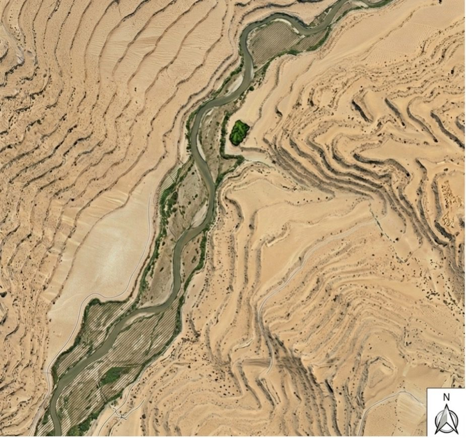
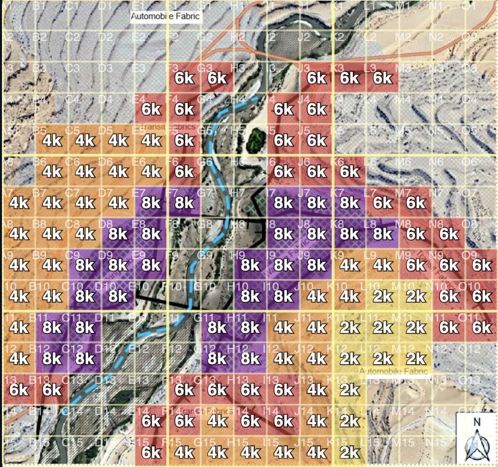
Interactive Tool
Explore the Feifelusia Dashboard
All population, energy, water and material calculations are available in the interactive city dashboard, built alongside this report.
02 — Urban Fabrics
The Urban Fabrics is shaped by a linear pattern that prioritises a human-centric urban metabolism by establishing distinguishable zones for walking, transit, and automobile fabrics. As shown in Figure 3, there are two connected walking cores, each with a radius of around 2 km, located on opposite riverbanks. This approach specifically addresses the Marchetti’s constant (Marchetti 1994) by ensuring that city functions operate within sustainable limits and by concentrating the residents within a transit-oriented zone to maintain socio-economic viability.
Car dominance is not a feasible option, as the desert and surrounding hills create vertical obstacles that make large-scale motorway infrastructure expensive and increase transport energy use per passenger, hence disrupting the metabolism (Wolman 1965). In contrast, the narrow linear geography formed by the river is ideal for high-capacity transit, as the banks provide natural corridors for tram lines and electric ferries, expanding walking and transit fabrics and making them more liveable while reducing the need for sprawl (Newman et al. 2016). Only one motorway is planned to serve logistics and connect the city to the national road network.
The primary public transport arteries consist of the 12 km linear tram corridors on both banks, functioning as high-capacity transit spines that link different functions and inner areas to the dense cores (Newman et al. 2016). To overcome the river as a horizontal obstacle and bottleneck, an electric ferry-based system serves as a sustainable transit alternative, reducing the burden on bridges. In the low-density outer areas, the tram-centric transit fabrics act as intermodal walking friendly distributors for bus lines, inspired by the financial feasibility of articulated systems in developing countries (ESMAP 2010).
The proposed fabric mix is heavily influenced by the Egyptian climate described by Mostafa et al. (2019), as the desert imposes significant heat-related constraints on walking. To tackle the heat-island effect, the walking cores adopt traditional Egyptian self-shading architecture and narrow streets to provide passive cooling (Oke 2017). Furthermore, biophilic street design (Söderlund 2015) is integrated to improve liveability and mitigate heat-island effects by closely linking urbanism to nature.
Given the paradoxical duality of Egypt's high flood risk (Rentschler and Salhab 2020) and water scarcity crisis (Mostafa et al. 2019), resilience is a foundational element of the urban fabric strategy. Following an integrated blue and green framework adopted from Lyon (UNESCO 2022), the direct floodplains are left empty and repurposed as recreational green lungs that absorb water and provide passive cooling to the centres. Concrete structures and critical infrastructure are strategically located directly above identified flood-risk threshold profiles (World Bank 2021) and protected with a mobile dam system to ensure the continuity of the city's metabolic backbone.
The presented spatial arrangement enables transit corridors and river vessel systems for short-chain food distribution. Moreover, the fabric mix supports the decentralised energy vision by providing building surfaces for rooftop solar solutions, while the self-shading design reduces cooling energy demand. Finally, the linear corridors facilitate sustainable material flows by providing efficient logistical paths for waste-to-energy collection and the transport of recycled materials.
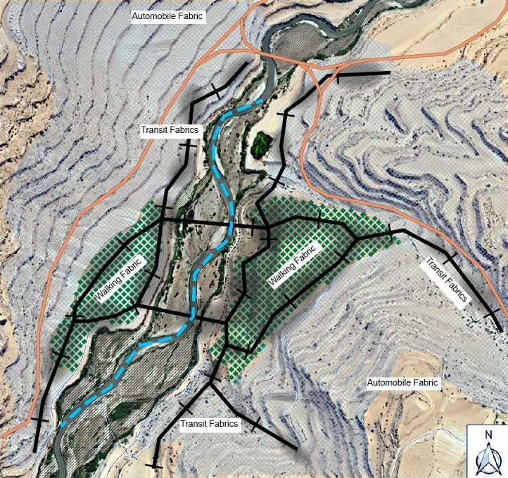
Marchetti Constant. The 30-minute commute threshold constrains urban form across all transport modes (Marchetti 1994). Feifelusia's 12 km linear tram corridor is sized so that no resident spends more than 28 minutes reaching the central district by tram, preserving walkable density at both ends of the corridor.
03 — Material Flows
Cities are dynamic systems. They continually consume resources, alter them. The idea of urban metabolism provides a solid method of considering cities as living organisms that take in material such as water, food, construction materials and energy, retain these materials within the built fabric and then discharge wastes back to the environment (Kennedy et al. 2011). The planned society along the Feifelusiac River in Northern Egypt presents a unique opportunity to design the material metabolism of a city from scratch (Girardet 2015).
The settlement has a population density of approximately 5,478 people per square km of inhabitable land. However a large portion of the area is unsuitable for dense urban development because of steep slopes, floodplain areas, road infrastructures, and land set aside for agriculture and industrial purposes. The result is approximately 115 km² of the land inhabitable, leaving an estimated population of around 630,000 residents. Therefore, efficient and sustainable material flows have to be established to reduce environmental pressure and to adapt for future urban growth (UN-Habitat 2020).
The main material flow in the city will be construction materials. The development of residential neighbourhoods, tram corridors, bridges, industrial areas and public infrastructure will require quantities of concrete, steel, glass, aggregates and timber. Based on the material footprint range of 10–17 tonnes per person per year, the settlement could require approximately 6.3 to 10.7 million tonnes of materials annually, including approximately 3.2 to 5.4 million tonnes of construction materials such as cement, aggregate, steel, timber and glass (UNEP & IRP 2024). Buildings should be developed in a modular and adaptable approach so that structural components might be repaired, replaced or reused rather than being demolished at the end of their life (Pomponi and Moncaster 2017).
Construction and demolition waste is expected to be one of the major waste streams of the city. Demolished concrete should be processed at onsite recycling facilities to produce recycled aggregates for road foundations and secondary construction. Re-using some of these materials minimises dependence on imported virgin resources and reduces landfill waste (Ghisellini, Cialani and Ulgiati 2016).
The flow of food and biomass is another important element of the urban metabolism of the settlement. Based on food demand estimates of 800–1,000 kg per person per year, the settlement may require approximately 504,000 to 630,000 tonnes of food annually. Waste from residential areas should be separated from the general waste and processed in anaerobic digestion systems. These facilities convert food waste into biogas for renewable energy and nutrient-rich fertilizer recycled into agriculture (Ellen MacArthur Foundation 2019).
Water is completely connected with material flows because water supports habitations, agriculture and industrial operations. Household water demand of 150–200 litres per person per day means the settlement could require approximately 94.5 to 126 million litres of water daily. Recycling wastewater for industrial, public landscaping, and irrigation purposes reduces pressure on freshwater resources (World Bank 2021).
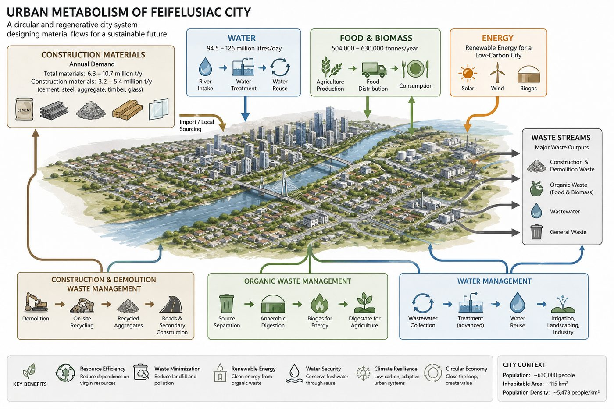
04 — Food Production
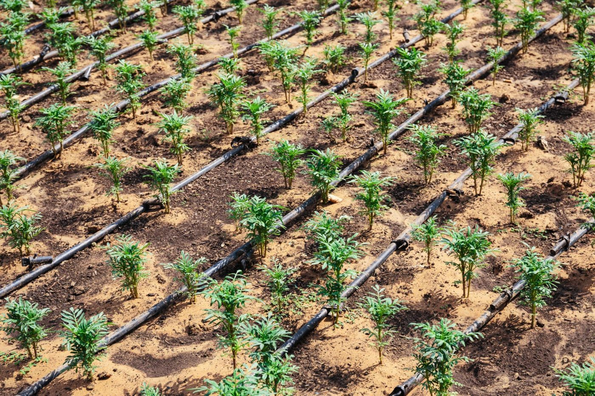
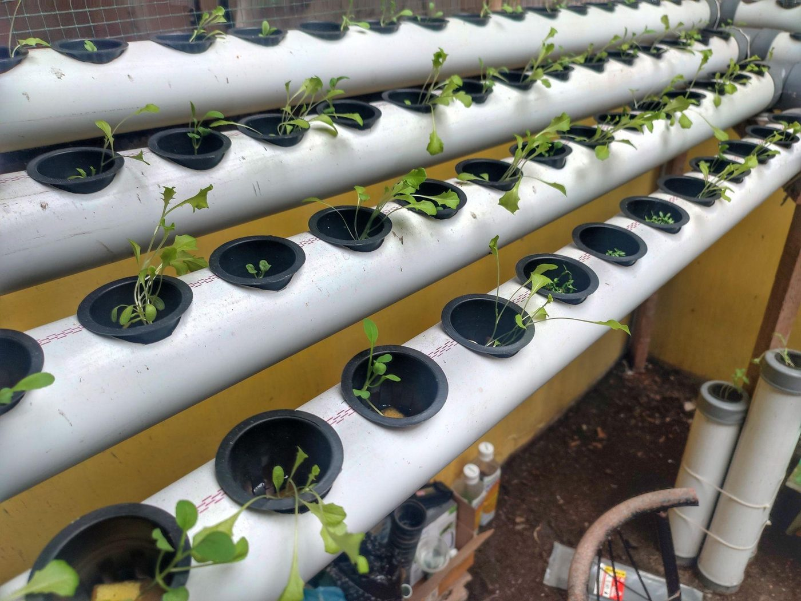
The future city is facing food production which is one of the most serious problems, as Northern Egypt has an arid desert climate with little rainfall, high temperatures and limited fertile area. The city has an estimated population of 630,000, and in order to support this population, a sustainable food system is needed to help alleviate pressure on water and land resources. The food consumed over the years, on average, will be around 504,000–630,000 tonnes a year for the City. The city integrates the use of modern agriculture technologies, sustainable energy sources, and water recycling systems for achieving long-term food security.
The Feifelusiac River is the main source of water for agriculture. Farming areas are near the river banks where it is easier to draw irrigation water. The city, however, implements drip irrigation systems, because the traditional watering methods waste a huge amount of water, which is providing water directly to plant roots. This is a great decrease in water evaporation and increase in water efficiency.
The city also adopts hydroponics and vertical farming to overcome land and climate constraints. Hydroponics uses nutrient solutions in water instead of soil and can save up to 90% water as compared to conventional farming. Vertical farming is an agricultural method in which the plants are grown in vertical layers in a multi-storey building, with a controlled internal environment, to optimise food production in a minimal amount of land (Kaiser et al., 2024) .
Solar greenhouses are also incorporated in the farming system. Renewable energy can be used for greenhouse cooling, irrigation and ventilation systems. Egypt receives high levels of solar energy throughout the year and suitable for use in greenhouses. They are greenhouses to safeguard the crop from extreme temperature variations and enable year-round food production.
Awareness and use of water recycling are part of the food strategy. Household wastewater is used for irrigation of agriculture fields rather than being discharged to the river. This decreases the need for fresh water and promotes sustainable farming in the desert (Christou et al., 2024).
The city is also linked to its circular economy system through the food system. Organic waste from domestic consumption and at the markets is processed at an anaerobic digestion facility and yields biogas for renewable energy generation as well as agricultural crops fertiliser. This forms a closed loop in which 'waste' is converted into 'asset'.
The proposed city will have a robust, sustainable food system through drip irrigation, hydroponics, vertical farming, wastewater re-use, and renewable energy systems. The integrated solutions contribute to food security, mitigate environmental stress and promote sustainable urban development under extreme desert conditions.
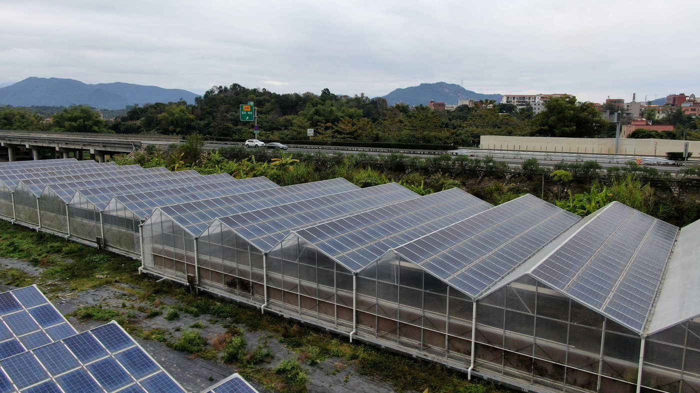
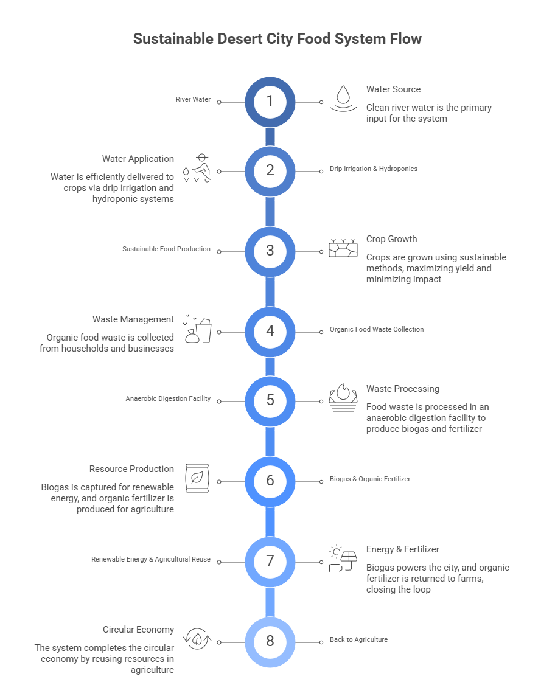
05 — Water Flow
The proposed water flow strategy is designed to support a sustainable urban population of 630,000 people within a river-based desert terrain. Because the environment is hot and dry, water must be carefully managed for domestic use, agriculture, environmental sustainability, and urban cooling. The strategy is inspired by Egypt’s Aswan High Dam and Lake Nasser system, which stores Nile water for irrigation, flood control, and long-term water security (Donia 2013). In this project, a smaller-scale underground reservoir system is proposed to reduce evaporation losses and protect water quality.
The city’s domestic water demand is based on a sustainable target of 150 liters per person per day. For a population of 630,000 people, the total daily water requirement is approximately 94.5 million liters, or 94,500 cubic metres per day. Over one year, the total water demand is estimated at around 34.5 million cubic metres. This water supply supports drinking, cooking, washing, sanitation, and other daily needs while considering the water scarcity conditions common in desert regions.
The proposed city will use two sustainable water sources: underground reservoir storage and rainwater harvesting. River water flowing through the terrain will be collected and stored in underground reservoirs located outside flood-prone areas near the city centre. This storage method is suitable for desert climates because it minimises evaporation caused by extreme heat, protects water from contamination, and provides reliable emergency water supply during drought periods (Donia 2013). From there, a pipe network distributes water equally to residential and commercial areas, including across the river through underground crossings and bridge-connected pipelines. .
Rainwater harvesting will serve as a secondary water source mainly for agriculture and landscape irrigation (Caprari 2023) . Rainwater collected from rooftops, roads, and public surfaces will be stored in tanks and recharge basins before being reused through drip irrigation systems. This system reduces pressure on river water, improves groundwater recharge, and decreases flooding caused by stormwater runoff.
Treated household wastewater will also be recycled and reused for agricultural irrigation and green landscape development. Wastewater reuse helps reduce dependence on freshwater resources, supports sustainable irrigation, and improves long-term water efficiency within the city (Christou et al. 2024) .
The proposed water flow system helps address several environmental and urban challenges within the desert terrain. Underground reservoirs improve water security during droughts while reducing evaporation losses. Rainwater harvesting and wetlands help slow stormwater runoff, reducing flood risks and improving groundwater recharge. Wastewater treatment and natural filtration systems reduce pollution entering the river and support environmental restoration (Anderson 2003) . In addition, agricultural irrigation increases local food production and reduces food insecurity. Green corridors and irrigated vegetation contribute to natural cooling, helping reduce urban heat and improve the overall sustainability of the city (Rakhshandehroo et al. 2017) .
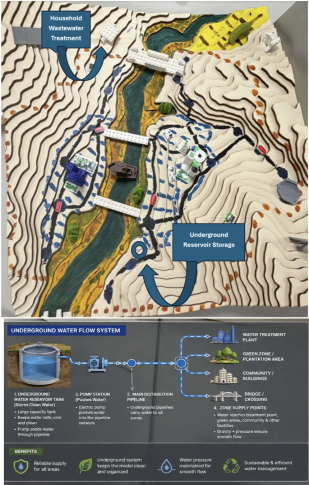
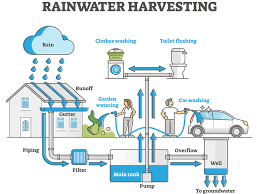
06 — Energy Flow
According to the World Bank Group (2025), Egypt's electricity consumption per capita in 2023 was 1.493 kWh. The total final energy-to-electricity ratio is 3, and the PV system capacity factor is 0.2. Also, the solar PV land-use intensity is 1.90 ha/MW (IEA, n.d.; IRENA, 2023).
Therefore, the total annual electricity demand in our future city is 940.6 GWh (1,493 × 630,000 [population]), the total final energy demand is 2821.8 GWh (940.6 × 3), and the non-electric final energy is 1881.2 GWh (2821.8 - 940.6). Furthermore, for the electricity solar PV model, the required installed solar PV is 537 MW (940.6/(8760 [hours] ×0.2)), the land area for utility-scale solar PV is 10.2 km² (940.6 × 1.90/100 ha per km²), and the land share of our terrain is 4.5% (10.2 / 225 [terrain area]).
As the main energy source, there are 2 solar farms on both sides of the terrain, and anaerobic digesters on both sides as backup energy sources. All energy could be provided from 100% renewable resources.
Thanks to the high levels of sunshine, solar PV is the most likely energy source. Not only for solar farms, but solar panels are also installed at various locations, such as rooftops and along building sides, using perovskite solar cells, which are sheet-type solar panels. The solar farms primarily supply energy to the commercial, industrial, and agricultural sectors. However, they can also draw energy from their own buildings’ solar panels when demand is high, under a smart grid system with batteries.
For the residential area, a hybrid system will be adopted. They generate energy from their rooftop solar panels, store it in batteries, and connect to the power grid when demand exceeds supply.
Additionally, a waste-to-energy system via anaerobic digestion will be installed as a backup energy resource to improve overall system efficiency and ensure a stable energy supply. In a WtE system, digestate is produced and used for agriculture as part of the circular economy.
Lastly, buildings should be designed to capture natural geothermal cooling as a passive cooling system, reducing electricity consumption for air conditioning.
Masdar City is located 17 km from downtown Abu Dhabi, UAE, and has been a pioneer in sustainable urban development (PWC, 2023; Masdar City, n.d.). In 2023, about 4,000 residents lived in the city, and it could accommodate 50,000 residents and 1,500 businesses (PWC, 2023; Energy Digital, 2020).
For the energy sector, Masdar City aims to reduce energy consumption to maximise efficiency. This will be done through insulation techniques, the optimisation of natural light, the use of smart applications and meters, and building management systems that interact with the city’s overall smart grid. It already features a 10 MW panel system on 22 hectares adjacent to the city. Also, solar panels are installed on the tops of the Masdar headquarters building and the Masdar Institute to supplement the energy needs of the city’s central buildings (Energy Digital, 2020).
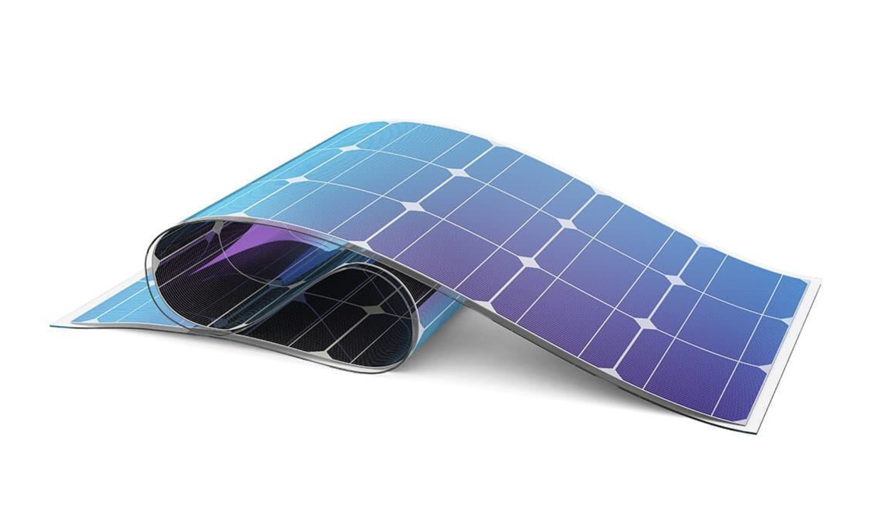
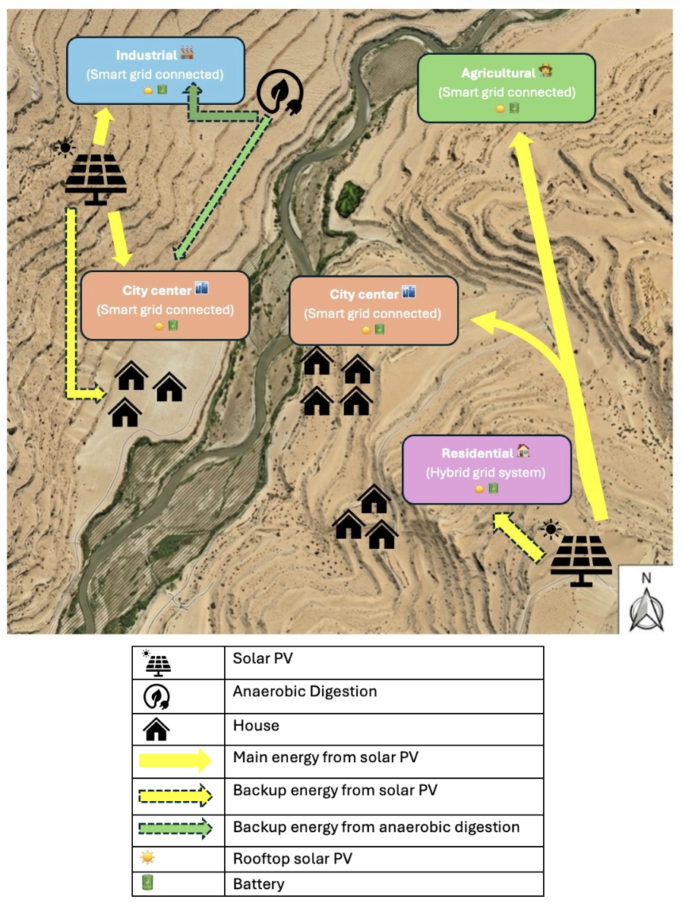
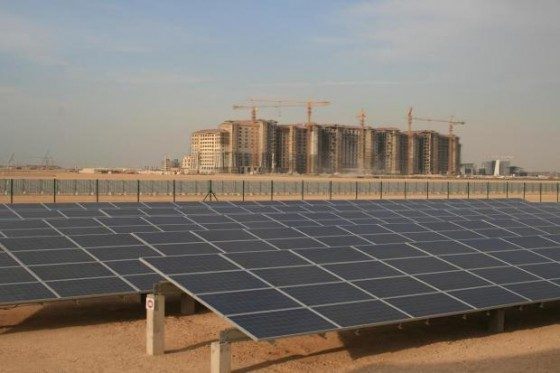
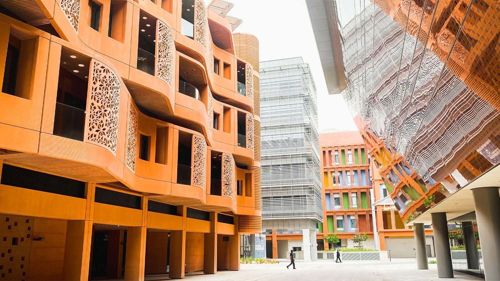
Case study: Masdar City. Located 17 km from downtown Abu Dhabi, Masdar City demonstrates that passive cooling, dense street networks, and building orientation can reduce energy demand substantially before generation is considered (Masdar City 2023). This approach directly informs Feifelusia's building code, which mandates orientation ratios, shading depths, and thermal mass standards for all new construction.
07 — Circular Economy
Keeping materials in active use within the city boundary is the defining aim of Feifelusia's circular economy strategy. Rather than a linear model where resources are extracted, used once, and discarded, the city is organised around two recovery loops: a construction loop that tracks building components in a digital register and recovers them at end of life, and an organic loop that processes food and garden waste into biogas and agricultural fertiliser. Both loops treat waste as a resource to be retained in circulation rather than a problem to be disposed of (Kirchherr et al. 2023; Potting et al. 2017).
As an inland desert city, geography makes circularity mandatory rather than optional, meaning every tonne of steel, cement, or glass carries a significant freight cost before reaching a construction site. The valley's desert sand is also too fine and rounded for standard Portland cement without additional treatment, ruling out local raw material substitution (Zhang et al. 2022). Recovering what the city already contains is therefore the financially rational path.
From the first building permit, every structure above a minimum threshold is registered in a digital materials database recording component types, quantities, and disassembly instructions. Amsterdam's Madaster platform demonstrates that such systems integrate into standard planning workflows at manageable cost (City of Amsterdam 2020; Çetin, De Wolf, and Bocken 2021), and a design-for-disassembly mandate requires all government and commercial buildings to use bolted connections and standardised components. Stadium 974 in Doha, assembled from bolted shipping containers and fully dismantled after the 2022 World Cup, confirms the approach is scalable in hot, arid conditions comparable to Northern Egypt (Minunno et al. 2018, 2020; Stockhusen et al. 2024). A Construction and Demolition Waste processing facility on the outer desert terrace handles the city's estimated 1.7 million tonnes of CDW annually (IRP 2024). At a 70 per cent recovery rate, approximately 1.19 million tonnes of secondary aggregate, steel, and reclaimed timber re-enters the local supply chain each year, displacing an equivalent volume of imported virgin material.
The organic loop is anchored by an anaerobic digestion plant at the city's agricultural edge. Of the 315,000 tonnes of municipal solid waste generated annually across a population of 630,000 (500 kg per capita), organic material accounts for approximately 100,800 tonnes, or 32 per cent of the total stream (IRP 2024). Capturing 70 per cent of this fraction channels around 70,560 tonnes into the digestion process each year, producing biogas for the combined heat and power system and digestate returned to farmland as fertiliser. Treated wastewater is simultaneously redirected to agricultural irrigation rather than the river, closing a parallel nutrient loop (Restrepo and Jaramillo 2017). Licensed informal waste cooperatives are integrated into collection and sorting across both systems, drawing on evidence that formalising this workforce raises recovery rates and improves occupational safety (Ho et al. 2024).
Across both loops combined, the 70 per cent recovery target yields approximately 5.95 million tonnes of the city's mid-point annual material throughput of 8.5 million tonnes kept in active use each year. The compact urban form makes this operationally viable by concentrating waste streams and shortening collection routes. Biogas feeds the energy system described in Section 5; digestate supports food production in Section 7; recovered aggregate re-enters the construction corridor. No loop functions in isolation, and their integration is the circular contribution Feifelusia demonstrates.
From the first building permit, every structure above a minimum threshold is registered in a city-level materials passport database. Each structural element, facade component, and mechanical fitting is logged with its material type, mass, and disassembly classification.
08 — Conclusion
The projected Feifelusiac River city is a model of how the principles of urban metabolism may serve as a blueprint for the development of a sustainable and resilient urban settlement in a desert environment. The project combines flows of material, water, food, energy and trash into a unified circular system that decreases environmental effects and offers an expected population of 630,000 people. The linear urban fabric fosters compact development, walkability and transit focused growth through the tram system, electric ferries and pedestrian planned urban areas, reducing need for private automobiles and the total energy usage.
The city’s material flow policy is based on the ideals of the circular economy, which aims to keep construction materials, organic waste and wastewater in use, rather than as trash. Buildings are constructed with modular and flexible systems that enable the repair, reuse and re-purposing of resources. Recycling building and demolition waste for recycled aggregates for secondary construction. This reduces dependency on landfill waste and imported raw materials. Anaerobic digestion systems provide a cyclic relationship between waste management, energy generation and agriculture by converting organic waste into sustainable biogas and fertilizer.
Sustainable food and water systems are part of the resilience of the settlement. Drip irrigation, hydroponics, vertical farming and solar-powered greenhouses are all examples of more efficient food production and water savings. Recycling of waste water and rain harvesting and underground reservoirs reduces the need for fresh water and increases long-term water security. Low-carbon energy generation around the city is supplied by renewable energy systems such as solar, rooftop photovoltaics and waste-to-energy technologies. In conclusion, the proposal presents an urban regenerative paradigm for future urban growth in arid regions by including environmental sustainability, climatic resilience and resource efficiency.
Feifelusia demonstrates that terrain constraints can become the forcing function for genuinely sustainable design. The river valley boundary prevents sprawl; the desert enforces solar energy; the distance from supply chains mandates circularity. Constraint is the city's competitive advantage.
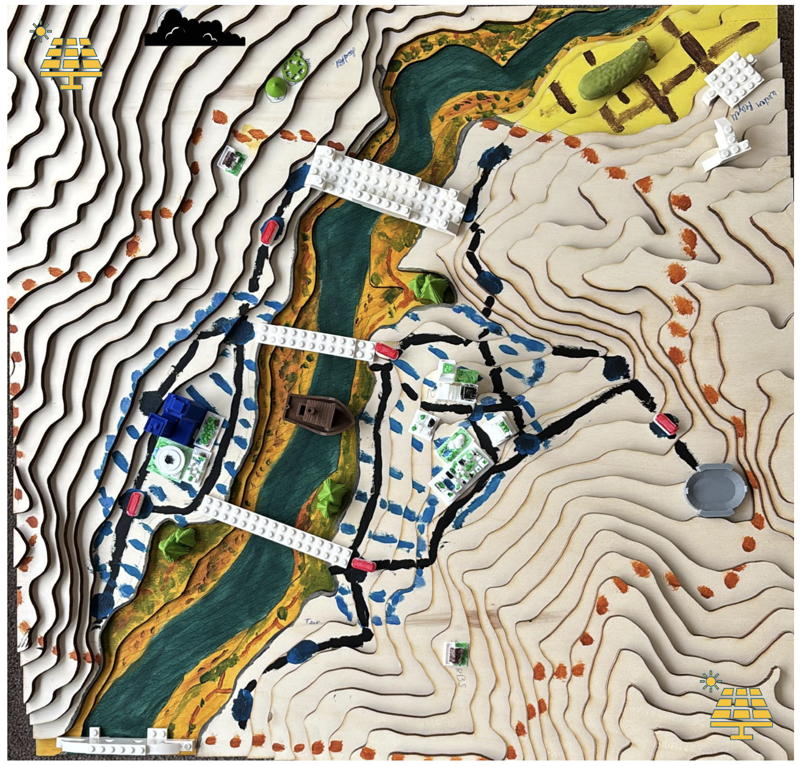
Academic References
Generative AI Declaration. Artificial intelligence tools were used in a supporting capacity for research synthesis, structural editing, and diagram generation during the preparation of this report. All factual claims, calculations, and academic citations were verified by the authors.